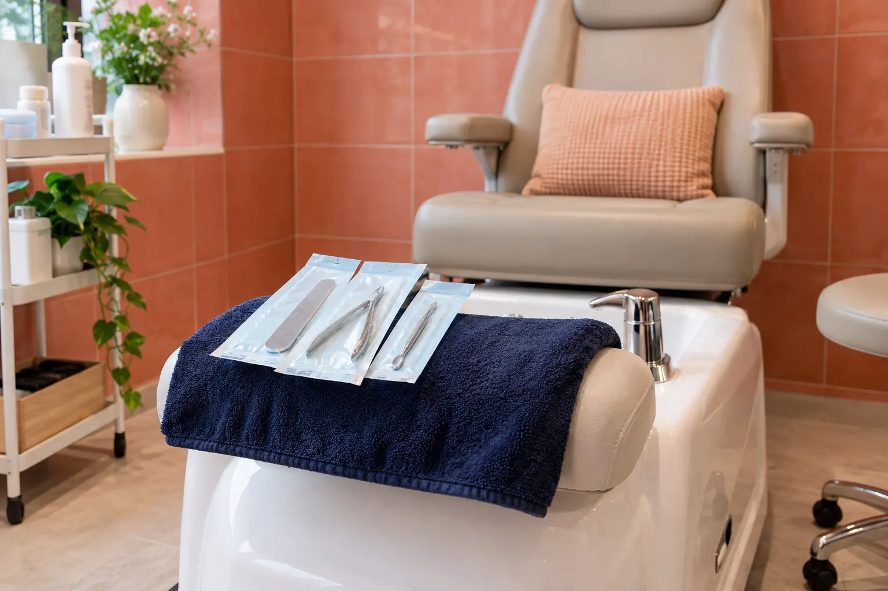

Pedikiūro kaina ir trukmė: pėdos, nagai, danga bei nuėmimas
Autorius: Madbeauty redakcija · Numatyta 2026 m. gruodžio 5 d. 10:00 (Lietuvos laiku)
Vieno pedikiūro meniu pavyzdys parodo, kaip priežiūros apimtis, lakavimas ir senos gelinės dangos nuėmimas siejasi su kaina bei nurodytu laiku.

Pedikiūro kainą ir vizito trukmę verta lyginti pagal visą pasiūlymo sudėtį: pėdų bei nagų priežiūrą, lakavimą ir ankstesnės dangos nuėmimą. 2026 m. spalio 9 d. patikrintas vieno teikėjo meniu rodo, kaip skiriasi jo variantai; tai nėra Lietuvos kainų vidurkis.
Vieno meniu variantų palyginimas
Šiame meniu nurodyti trys variantai:
- Higieninis pedikiūras be lakavimo – 75 min., 45 €.
- Pedikiūras su paprastu lakavimu – 90 min., 50 €.
- Geliniam lakui nuimti ir naujai gelinei dangai – iki 120 min., 60 €.
Pirmųjų dviejų įrašų skirtumas šiame meniu yra 15 min. ir 5 €. Tarp paprasto lakavimo varianto ir varianto su gelinio lako nuėmimu bei nauja gelio danga nurodyta 30 min. ir 10 € daugiau. Tai konkrečių meniu variantų palyginimas, o ne atskiras universalus lakavimo ar nuėmimo tarifas. Trečiame variante kartu keičiasi keli darbai, todėl iš kainų skirtumo negalima apskaičiuoti kiekvieno jų atskiros kainos ar trukmės.
Kaip palyginti pasiūlymų apimtį
Kad palyginimas būtų prasmingas, sulyginkite tuos pačius dalykus:
- Pagrindinė priežiūra: kas konkrečiai įtraukta į pėdų ir nagų sutvarkymą?
- Danga: ar kaina nurodyta be lakavimo, su paprastu laku, ar su geliniu lakavimu?
- Nuėmimas: ar ankstesnės dangos nuėmimas įtrauktas, ir kokia danga minima?
- Laikas: ar nurodyta trukmė apima visą pasirinktą paslaugų derinį?
Jei meniu nepaaiškina, kas įeina į pasirinktą variantą, išsiaiškinkite jo bendrą sudėtį, kainą ir rezervuojamą laiką. Taip žinosite, ar lyginate vienodą paslaugos apimtį, o ne vien panašiai pavadintas eilutes.
Meniu neįvertina individualios nagų būklės
Kainoraštis neįvertina individualios nagų ar odos būklės. Amerikos dermatologų akademija pataria dirbtiniais nagais neslėpti nagų problemų. Jei pastebite pakitimų ar dėl jų nerimaujate, vien kosmetinių paslaugų palyginimas nepadeda nustatyti priežasties.
NVSC primena, kad grožio paslaugoms reikalingas galiojantis leidimas-higienos pasas konkrečiai veiklai. Vien meniu pavyzdys ar nurodyta kaina nepatvirtina, ar konkretus teikėjas turi reikiamą leidimą.
Procedūrų aprašai kataloge: Pedikiūras. Miestą ir realaus teikėjo pasiūlymą pasirinkite kataloge, kai tokia pasiūla pateikta.
Susiję gidai
Šaltiniai
- Classic Pedicure & Manicure · LT meniu · www.treatwell.lt
- AAD · manikiūro ir pedikiūro sauga · www.aad.org
- NVSC · grožio paslaugų sauga, 2026-09-17 · nvsc.lrv.lt